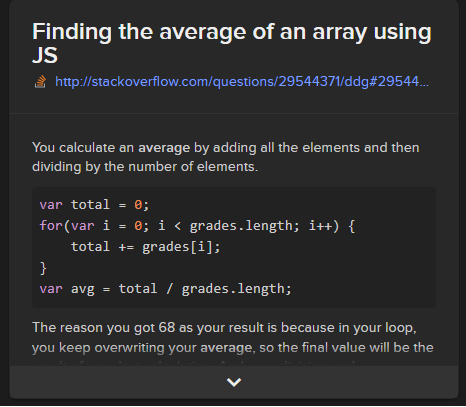
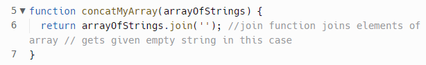

A story about:
I - a time I was blocked on a simple problem..
Hmmm, this is tough, there's several but not much as a problem, but simple thing like typo, or forgetting to put a comma in the code. In terms of a problem I was having in the challenge, it was trying to find an average of an array for JavaScript Kata - Gradebook, I end up finding the solution on Stack-Overflow while searching the internet.
Solution Found on the Internet
My Solution

There were more, but that's one of the example, most of the solution I found was on the internet, W3Schools & StackOverflow.
II - a time I was elegantly solved a problem...
I guess the most easiest one was the Built-in (Array) Methods challenge; the concatMyArray, returning or printing out a string. I simply wrote return arrayOfStrings.join('').
Confidence on problem-solving techniques/processes
I haven't try most of the techniques/processes below.
- Pseudocode
- Trying something
- Rubber ducky method
- Reading error messages
- Console.logging
- Googling/Searching the internet/Youtube
- Asking your peers for help
- Asking coaches for help
- Improving your process with reflection
I have yet to try this out, and as I get better at coding I'll try to use this often.
This is something I do often, just trying out anything to see if it output something.
I wasn't aware of this method before, but it makes sense now as I've been commenting some of code, and just asking myself quetions when I do get stuck.
I was doing these often when trying to do the Kata, and googling for answers.
This is one of the method I use often as well.
This is the main tool I use to find answers, but can't always find the right answers, have to spent a bit of time.
Most of the questions I want to ask, have mostly been asked by other students on Discord, looking through the messages help me with the inquires I have.
I'm not sure if I'm comfortable asking the coaches much yet haha, I think I like to find answers on my own, get my own understanding before asking peers or coaches. But I would love to during bootcamp as it's face to face and not online. Althought it may feels comfortable asking online for help but in person I say is much better.
This is something I need to practice more of instead of advancing ahead.